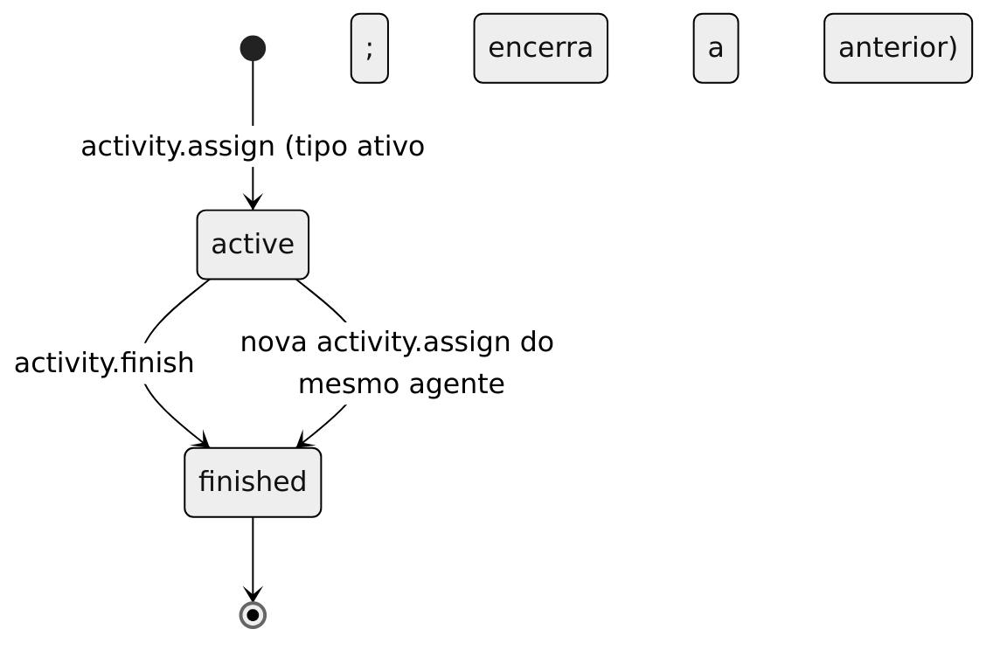

Atividades e alocações
Independentes da presença: um agente pode estar available e alocado a "Treinamento" (decisão em decisions.md).
Tipos
activity_types (nome único por tenant, active). activity.type.save é exclusivo do admin; todos os papéis leem activity.catalog. O console oferece gestão de tipos para administradores.
Alocações
activity_assignments: status active/finished, com CHECK ligando status a ended_at. Um índice único parcial garante uma alocação ativa por agente.
activity.assign { agentId, activityTypeId }: exige tipo ativo; encerra a alocação anterior e cria a nova de forma atômica, sob lock por agente.activity.finish { agentId }:invalid_statese não houver ativa.activity.history { agentId? }.
Diagrama: activity-states.
Permissões (assertCanAllocate)
admin: qualquer agente. Supervisor: agentes que compartilham um setor que ele supervisiona. Agente: apenas a si, e só se agents.can_change_own_activity for verdadeiro.
Concorrência e auditoria
Dois pedidos simultâneos para o mesmo agente são serializados pelo lock e pelo índice único. Gravam auditoria: activity.type_save, activity.assign, activity.finish. Evento: activity.updated.
Diagramas referenciados
